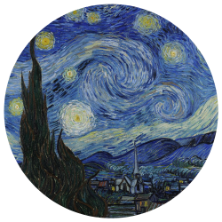

Welcome to the Starlight Audio Player! This an open-source framework for hosting your own audios. Please visit my GitHub page here the code, documentation, and user guides. AI use within this framework is forbidden. While this code is open-source, I reserve the right to ask anyone not to use it.

Search for audios below, and click the "Load Audio" button to load the audio into the player. Click on the buttons within the "Tags" column to add that tag to the current search (click on it again to remove it from the search list).
Shoutout your friends and faves!